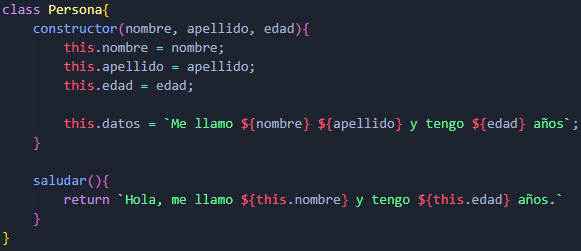
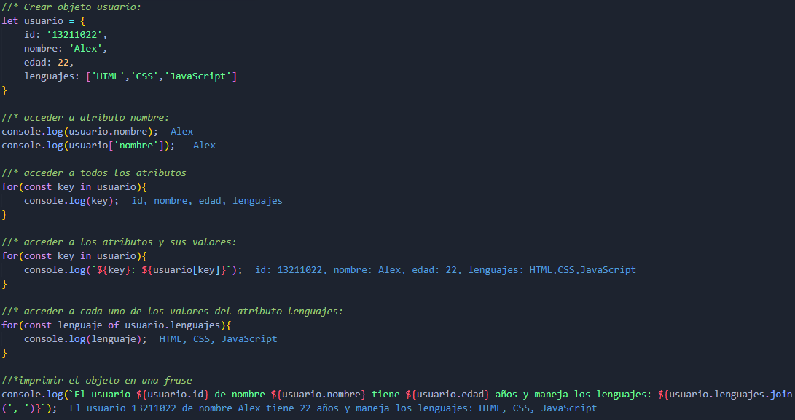
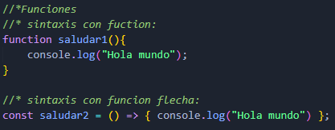

Programación orientada a objetos
Es un paradigma de la programación que actualiza la forma de programar anterior (programación estructurada). Algunos de sus conceptos fundamentales son:
- Clases.
- Propiedades.
- Métodos.
- Objetos.
- Eventos.
- Encapsulamiento.
- Abstracción.
- Herencia.
- Polimorfismo.
Clases:
Son plantillas/modelos sobre las cuales se pueden crear objetos nuevos. Estas inician con mayúsculas y deben tener una funcion constructor, la cual contiene los parámetros mínimos que necesita un objeto para existir y asi poder dar un estado inicial a los objetos creados a partir de la clase.
Propiedades:
Son los atributos o características de los objetos. Estas se definen tanto en los parámetros del constructor como dentro de la misma funcion para así inicializar los objetos. Tambien se pueden añadir propiedades que no esten en los parámetros pero siempre utilizando this para referenciar al objeto.
Métodos:
Se denomina métodos a las funciones asociadas a los comportamientos o acciones que realizan los objetos.
Objetos:
Son estrucutras de datos que representan instancias de clases. Todos los objetos tienen propiedades o atributos y comportamientos y acciones representados por pares de clave: valor.
Para acceder a las propiedades y acciones del objeto se utiliza la nomeclatura del punto.
Hay 2 maneras de crear objetos:
Crear un objeto único declarandolo como una variable o constante:
Mediante clases usando new:
Funciones o métodos:
Sintaxis:
Son fragmentos de código que se escriben para ejecutar una tarea y no vovler a escribir el mismo código más de una vez.
- Ayudan a modularizar el código.
- Deben realizar solo una tarea.
- Pueden recibir parámetros.
- Pueden devolver valores.
- Para utilizarlas se deben invocar.